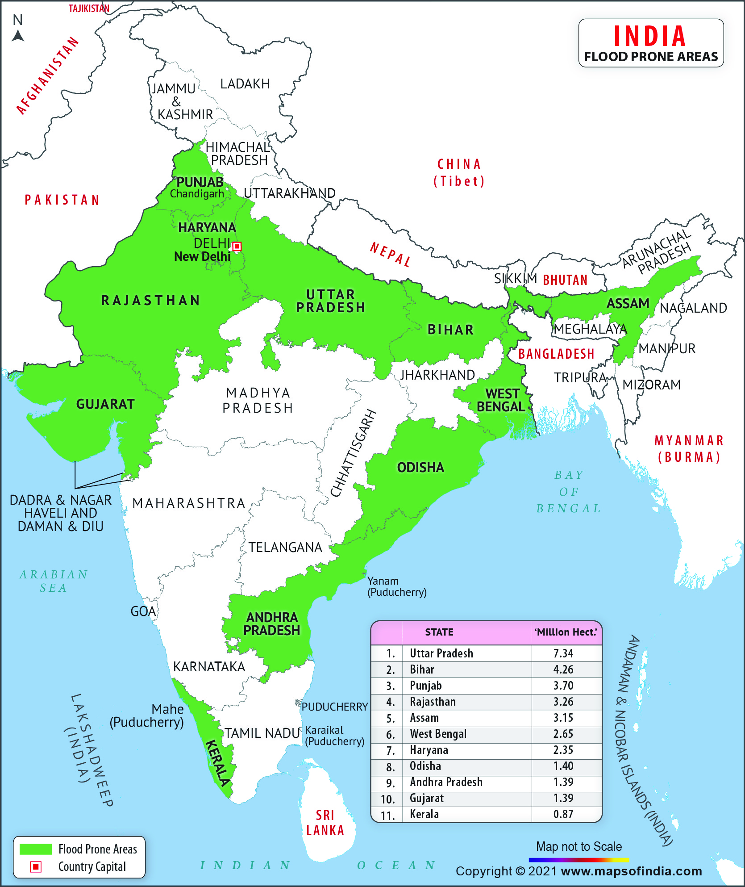

FLOODS
Failing to evacuate flooded areas, entering flood waters, or remaining after a flood has passed can result in injury or death. Flooding is a temporary overflow of water onto land that is normally dry. Floods are the most common natural disaster in the United States. Floods may:- Result from rain, snow, coastal storms, storm surges, and overflows of dams and other water systems.
- Develop slowly or quickly – Flash floods can come with no warning.
- Cause outages, disrupt transportation, damage buildings, and create landslides.
Types of flood
1.Areal
Floods can happen on flat or low-lying areas when water is supplied by rainfall or snowmelt more rapidly than it can either infiltrate or run off. The excess accumulates in place, sometimes to hazardous depths. Surface soil can become saturated, which effectively stops infiltration, where the water table is shallow, such as a floodplain, or from intense rain from one or a series of storms.
2.River flooding
Floods occur in all types of river and stream channels, from the smallest ephemeral streams in humid zones to normally-dry channels in arid climates to the world's largest rivers. When overland flow occurs on tilled fields, it can result in a muddy flood where sediments are picked up by run off and carried as suspended matter or bed load.
3.Coastal flooding
Coastal areas may be flooded by storm surges combining with high tides and large wave events at sea, resulting in waves over-topping flood defenses or in severe cases by tsunami or tropical cyclones. A storm surge, from either a tropical cyclone or an extratropical cyclone, falls within this category. A storm surge is "an additional rise of water generated by a storm, over and above the predicted astronomical tides"

4.Urban flooding
Urban flooding is the inundation of land or property in a built environment, particularly in more densely populated areas, caused by rainfall overwhelming the capacity of drainage systems, such as storm sewers. Although sometimes triggered by events such as flash flooding or snowmelt, urban flooding is a condition, characterized by its repetitive and systemic impacts on communities, that can happen regardless of whether or not affected communities are located within designated floodplains or near any body of water

5.Catastrophic
Catastrophic riverine flooding can result from major infrastructure failures, often the collapse of a dam. It can also be caused by drainage channel modification from a landslide, earthquake or volcanic eruption. Examples include outburst floods and lahars. Tsunamis can cause catastrophic coastal flooding, most commonly resulting from undersea earthquakes.
IF YOU ARE UNDER A FLOOD WARNING, FIND SAFE SHELTER RIGHT AWAY
- Do not walk, swim, or drive through flood waters. Turn Around, Don’t Drown!
- Just six inches of moving water can knock you down, and one foot of moving water can sweep your vehicle away.
- Stay off of bridges over fast-moving water.
- Determine how best to protect yourself based on the type of flooding.
- Evacuate if told to do so.
- Move to higher ground or a higher floor.
- Stay where you are.
- Know types of flood risk in your area. Visit FEMA’s Flood Map Service Center for information.
- Sign up for your community’s warning system. The Emergency Alert System (EAS) and National Oceanic and Atmospheric Administration (NOAA) Weather Radio also provide emergency alerts.
- If flash flooding is a risk in your location, then monitor potential signs, such as heavy rain.
- Learn and practice evacuation routes, shelter plans, and flash flood response.
- Gather supplies in case you have to leave immediately, or if services are cut off. Keep in mind each person’s specific needs, including medication. Don’t forget the needs of pets. Obtain extra batteries and charging devices for phones and other critical equipment.
- Purchase or renew a flood insurance policy. It typically takes up to 30 days for a policy to go into effect and can protect the life you've built. Homeowner’s policies do not cover flooding. Get flood coverage under the National Flood Insurance Program (NFIP)
- Keep important documents in a waterproof container. Create password-protected digital copies.
- Protect your property. Move valuables to higher levels. Declutter drains and gutters. Install check valves. Consider a sump pump with a battery.
- Depending on where you are, and the impact and the warning time of flooding, go to the safe location that you previously identified.
- If told to evacuate, do so immediately. Never drive around barricades. Local responders use them to safely direct traffic out of flooded areas.
- Listen to EAS, NOAA Weather Radio, or local alerting systems for current emergency information and instructions.
Do not walk, swim, or drive through flood waters. Turn Around. Don’t Drown!
- Stay off bridges over fast-moving water. Fast-moving water can wash bridges away without warning.
- If your vehicle is trapped in rapidly moving water, then stay inside. If water is rising inside the vehicle, then seek refuge on the roof.
- If trapped in a building, then go to its highest level. Do not climb into a closed attic. You may become trapped by rising floodwater. Go on the roof only if necessary. Once there, signal for help.
- Listen to authorities for information and instructions. Return home only when authorities say it is safe.
- Avoid driving, except in emergencies.
- Snakes and other animals may be in your house. Wear heavy gloves and boots during clean up.
- Be aware of the risk of electrocution. Do not touch electrical equipment if it is wet or if you are standing in water. If it is safe to do so, turn off the electricity to prevent electric shock.
- Avoid wading in floodwater, which can contain dangerous debris and be contaminated. Underground or downed power lines can also electrically charge the water.
- Use a generator or other gasoline-powered machinery ONLY outdoors and away from windows.
HOW TO STAY SAFE WHEN A FLOOD THREATENS
PREPARE NOW
SURVIVE DURING
Be Safe AFTER
Flooded region in INDIA
There are three major regions that are prone to flooding in India. These include Central India and Deccan, Ganges, Brahmaputra, and Northwest. Tidal flooding, major erosion of the coasts, perpetual rainfalls, and landslides are the causes of floods in these regions.
